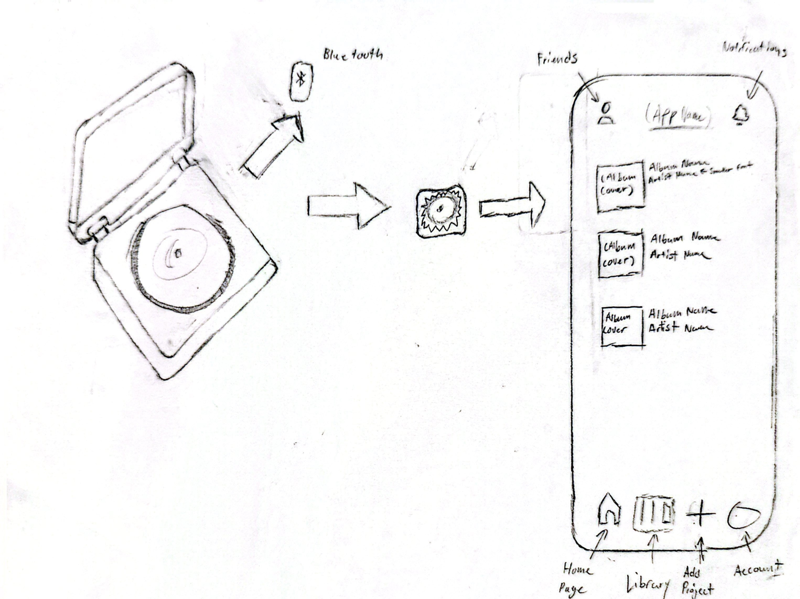

Vinyl records are historic music designs that shaped how communities discovered and shared sound. From the 20th century onward, records made music tangible and social, bringing people together through listening sessions, local record stores, and shared cultural identity rooted in music. Due to streaming, people don’t use vinyls often anymore.

Using a community-based music access system, this provides free or low-cost listening for people who can’t afford streaming services. It uses public listening stations, library-style music lending, and ad-free local networks to share music legally. All this can be linked to an app (phone and computer) that connects to a vinyl/cd player and can be used to register records they either personally have or records they got from public spaces like libraries and record stores.
